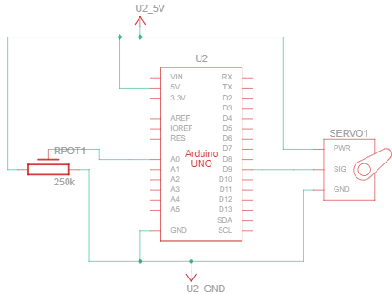
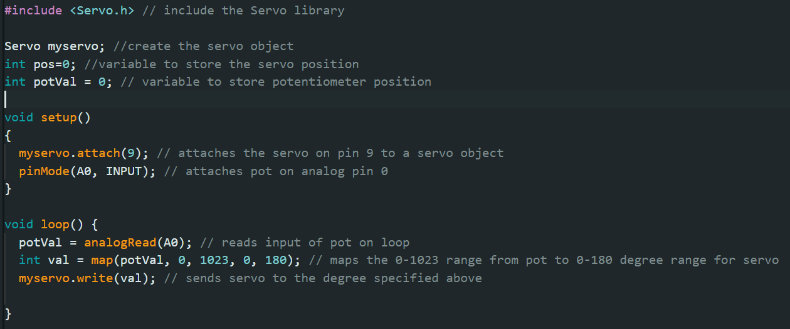
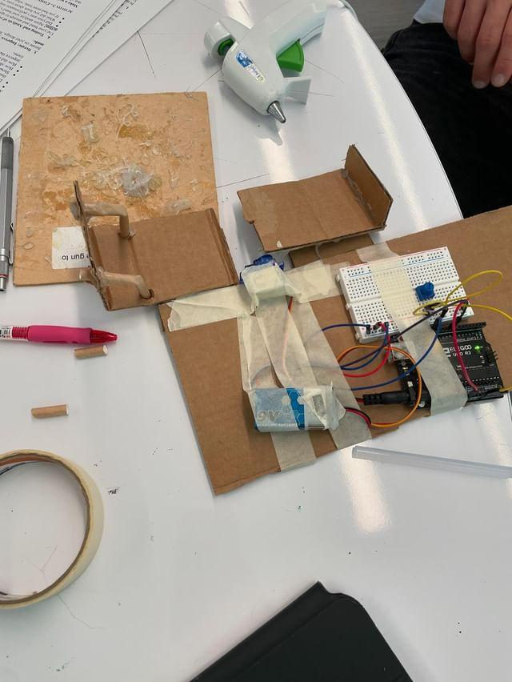
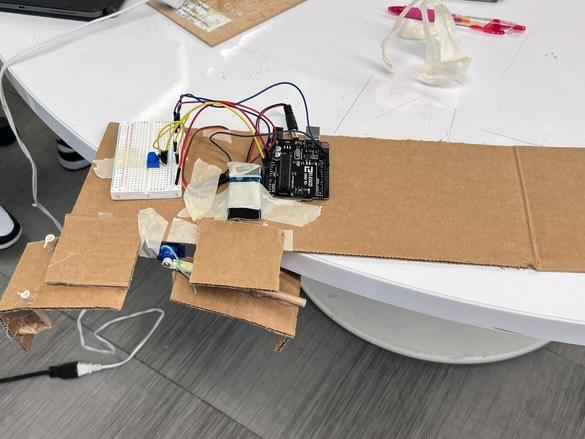
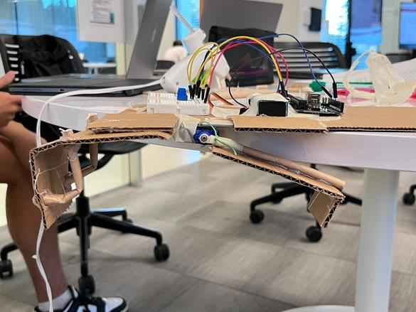

ENGR 1L-7 Team #4: Daniel Bartz, Aveed Gorji, & Steven Zhu
Week 7 "Robotic Hand Design Website"
Brief summary (one paragraph) describing your initial design - what did you decide to build and why, how did it function, what did you target for improvement and why, etc.?
For our initial design, we created a claw with 2 fingers. We decided on this approach because the claw would be a scoop to securely pick up the ping pong ball. We also added straw rails on the side of one of our claws, acting like a basket, to ensure the ping pong ball was secure once picked up. We taped the breadboard, battery, and Arduino directly onto a flat piece of cardboard. Our design included one static claw, and the other directly attached to the servo motor’s arm. This allowed the claw to open and close synchronously with the arm movement of the servo motor. We attempted to use it to pick up the ping pong ball, but due to the claw’s wobbling, it was unable to grasp the ball. Our initial design’s biggest problem was the loose connection between the claw and the servo motor; to improve our design, we focused on ensuring a better connection between the two. We used tape and rubber bands to achieve a stronger connection between the motor and our claw so that the claw didn’t loosely flop around when opening and closing.
TinkerCAD Schematic of Initial Design:
Arduino Code of Initial Design:
Photo of Initial Design:
Brief summary describing your final design - what were the results (how does it work), how has it improved from your initial design, what were changes made from the first iteration and why did you make the changes, etc.
Our final design was similar to our initial. We made no changes to our code as it already worked as intended. The only change we made was strengthening the connection between the servo motor and the claw. Initially, we just used tape to secure the claw to the servo motor. While the connection worked, it was loose and wasn’t strong enough to pick up the ping pong ball. To fix this, we used a combination of tape and rubber bands to achieve a stronger connection between the motor arm and our claw. With this fix, our claw no longer flopped around loosely. The claw picked up the ping pong ball and securely closed it into our basket claw design. Also, including straw rails on the sides ensured the ping pong ball was secure once picked up.
Another modification we made was with the initial positioning of the claw on the servo. Initially, our claw was attached to the outer side of the servo motor, which caused it to tilt to one side and become unbalanced when the servo moved. To fix this, we reattached the servo to the centerline of the claw. This adjustment prevented the claw from tilting or wobbling during movement.
Since the main issue we focused on in our initial design was the physical connection wobbling between the servo motor and the claw, we made adjustments to ensure stable movement in terms of angle, direction, and speed. This approach was successful, so there were no changes to our code or schematics.
TinkerCAD Schematic of Final Design:
Arduino Code of Final Design:
Photos of Final Design:
 Video of Final Design: